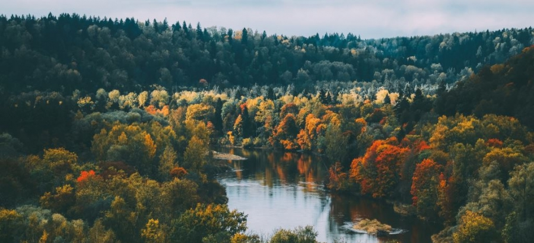

Gaujas Nacionālais parks
Parks ir izveidots 1973. gadā. Tas vairāk nekā 90 tūkstošu hektāru platībā aizsargā Gaujas senielejas krāšņāko posmu no Valmieras līdz Murjāņiem. Lai visā pilnībā izbaudītu parka burvību, ar vienu dienu nepietiks!
Iespējas:
- Apskatīties atsegumus, klintis un alas
- Apmeklēt kultūrvēsturiskos pieminekļus
- Baudīt aktīvo atpūtu
| Nosaukums | Komentārs |
|---|---|
| Gūtmaņala | pēc tilpuma lielākā ala Baltijā |
| Kalējala | garākā |
| Siguldas Velnala | viena no populārākajām |
| Ērgļu klintis | Baltijā monolītākā smilšakmens klinšu siena |
| Zvārtes iezis | smilšakmens un dolomīta nogulumieži |
| Dzilnas iezis |